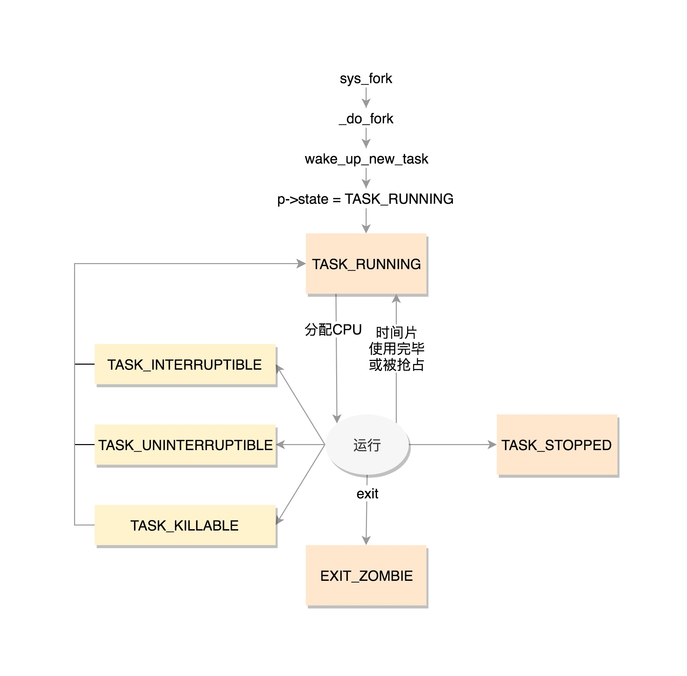

进程管理与调度¶
进程就是处于执行期的程序，当我们将代码编译成可执行文件时，输入./a.out，我们就开启了一个新的进程。进程从磁盘加载到内存的过程请参考程序的装载。
一个进程相当于一个大型的项目组，这个项目组包含着许多资源，比如打开的文件信息，占用的内存空间，处理器的状态等。而线程就是项目组中执行具体任务的人。就像一个项目组至少得有一个人，一个进程必须得有一个主线程。你可以把所有的任务都交给主线程，但是大部分情况下，我们都会让把一个大的任务拆分成一个个小任务，然后另外开辟线程去处理它们。那么我们是否可以再创建几个进程去处理呢？可以，但是没有必要。首先，进程占用的资源空间很大，而线程是轻量级的，创建的速度非常快。其次，进程之间共享资源非常麻烦，而线程由于是同一个进程下的，他们可以共同访问某些资源。这就好比一个公司下面不同项目组之间交接工作容易扯皮，但是如果大家都在同一个项目组下相对来说就好很多。
进程描述符¶
为了管理进程，内核必须清晰地描述每一个进程。在Linux系统下，不管是进程还是线程，内核统一用task_struct结构体管理。
内核栈¶
每个进程都有一个专用的内核栈，用于保存进程在内核态执行时的临时数据和上下文信息。当创建新进程时，内核会为其分配一个合适大小的内核栈空间，并将其地址赋给task_struct中的stack成员。
线程描述符¶
线程描述符thread_info用于存储有关线程的信息。该结构体包含了很多与线程相关的字段，其中最重要的是task_struct *task，它指向当前线程所属的进程描述符。内核提供了current宏来获取当前CPU上运行进程的task_struct结构，该宏本质上等于current_thread_info()->task。
上述代码返回当前task_struct的地址。
进程状态¶
在task_struct中，涉及到进程状态的是这几个成员：
state可以取的值有：
/* Used in tsk->state: */
#define TASK_RUNNING 0
#define TASK_INTERRUPTIBLE 1
#define TASK_UNINTERRUPTIBLE 2
#define __TASK_STOPPED 4
#define __TASK_TRACED 8
/* Used in tsk->exit_state: */
#define EXIT_DEAD 16
#define EXIT_ZOMBIE 32
#define EXIT_TRACE (EXIT_ZOMBIE | EXIT_DEAD)
/* Used in tsk->state again: */
#define TASK_DEAD 64
#define TASK_WAKEKILL 128
#define TASK_WAKING 256
#define TASK_PARKED 512
#define TASK_NOLOAD 1024
#define TASK_NEW 2048
#define TASK_STATE_MAX 4096
state字段的值用一个简单的赋值语句设置。
也可以使用set_task_state和set_current_state宏：它们分别设置指定进程的状态和当前执行进程的状态。
TASK_RUNNING表示进程正在执行或者准备执行。
当进程进入睡眠后，有两种状态：
TASK_INTERRUPTIBLE表示进程可以响应信号。也就是当一个信号来临时，唤醒该进程，然后执行信号处理函数。
TASK_UNINTERRUPTIBLE表示进程不可以响应信号。当进程等待某个事件完成而进入深度睡眠状态时，如果该事件因为某种原因无法完成，那么这个进程也将永远睡眠下去。
这是一个非常危险的事情，除非很有把握不然不会让进程进入深度睡眠态。
为了解决这个问题，有了一种新的状态：TASK_KILLABLE，可以终止的深度睡眠态。它的定义如下：
其中TASK_WAKEKILL表示在接收到致命信号时，唤醒进程。
TASK_STOPPED表示进程被暂停，当接收到SIGSTOP、SIGTSTP、SIGTTIN或SIGTTOU信号后，进入该状态。
TASK_TRACED表示进程被跟踪。这往往是调试程序暂时终止了进程的运行。
内核经常需要调整当前进程的状态，可以使用set_task_state(task, state)函数，该函数将指定进程设置为指定状态。
exit_state的取值有两种：
EXIT_ZOMBIE表示僵死状态。一个进程执行被终止，但是其父进程还没有调用wait4()或者waitpid()系统调用来回收资源时，进入该状态。
EXIT_DEAD是进程的最终状态。父进程回收子进程资源之后，进程由系统删除。
进程的一些其他状态信息由flags控制，使用位掩码来表示不同的标记。一些常见的标记包括：
- 任务状态：例如是否正在运行、停止等
- 调度器相关：例如调度策略、优先级等
- 信号处理：例如挂起信号集
- 进程特性：是否为守护进程、是否允许被追踪等
flags成员的一些取值举例如下，这些宏以PF开头：
#define PF_EXITING 0x00000004 //getting shut down
#define PF_WQ_WORKER 0x00000020 //I'm a workqueue worker
#define PF_KTHREAD 0x00200000 //I'm a kernel thread
进程标识¶
Linux系统使用PID来标识一个进程，PID被顺序编号，新创建的进程的PID通常是前一个进程+1。但是PID的值有一个上限，系统管理员可以通过修改/proc/sys/kernel/pid_max文件的值来改变这个上限。这么一看似乎一个PID来唯一标识一个进程就够了，但是在task_struct中，涉及到进程标识的有以下几个成员。
你可能会疑惑，唯一标识一个进程，为什么需要用到这么多变量？这是因为之前提到，在Linux系统下，进程与线程并不特别区分，都是一个task_struct结构体。这就给管理带来了一些麻烦。比如我们希望同属于一个进程组的线程拥有共同的pid。当我们发送一个信号给指定pid时，我们希望这个信号能作用于该组中的所有线程。当杀死某个进程时，当然是连同该进程下的所有线程一起杀死，而不是只杀死了主进程，其他线程还在工作，这显然不合常理。事实上,POSIX标准也规定一个多线程应用程序的所有线程必须享有共同的pid。
遵照这个标准，Linux引入了线程组的概念。一个线程组中所有线程使用和该线程组领头线程（thread group leader）相同的pid，它被存入task_struct的tgid字段。当我们使用getpid()系统调用返回当前进程的pid时，返回的也是tgid的值。任何一个进程，如果只有主线程，那么pid = tgid， group_leader指向的就是自己。如果主线程创建了其他线程，那么每个线程都有自己的pid，但是tgid仍然是主线程。
进程间关系¶
Linux系统中所有的进程都是PID为1的init进程的后代，内核在系统启动的最后阶段启动init进程。该进程读取系统的初始化脚本并执行其他的相关程序，最后完成整个系统的启动。
每个进程必有一个父进程，如果一个进程创建了多个子进程，那么子进程之间还有兄弟关系。在task_struct中，使用以下字段来表示亲缘关系：
struct task_struct __rcu *real_parent; /* real parent process */
struct task_struct __rcu *parent; /* recipient of SIGCHLD, wait4() reports */
struct list_head children; /* list of my children */
struct list_head sibling; /* linkage in my parent's children list */
这些字段根据名字就能猜到是什么意思。需要注意的是，通常情况下real_parent和parent是一样的，但是当我们启动GDB监视某个进程时，该进程的real_parent不变，但是parent变成了GDB。
进程之间还有其他关系，这里不详细展开。
运行统计¶
u64 utime;//用户态消耗的CPU时间
u64 stime;//内核态消耗的CPU时间
unsigned long nvcsw;//自愿(voluntary)上下文切换计数
unsigned long nivcsw;//非自愿(involuntary)上下文切换计数
u64 start_time;//进程启动时间，不包含睡眠时间
u64 real_start_time;//进程启动时间，包含睡眠时间
内存管理¶
文件与文件系统¶
/* Filesystem information: */
struct fs_struct *fs;
/* Open file information: */
struct files_struct *files;
进程组织形式¶
要明白进程之间是如何组织的，首先要知道双向链表这个数据结构。双向链表就是同时有prev和next指针的链表，分别指向前一个和后一个元素。Linux使用双向链表将所有进程的描述符全部连接起来。
运行队列¶
当内核需要寻找一个新进程运行时，必须只考虑已处于TASK_RUNNING状态的进程，于是就有了运行队列。为了提高调度程序的运行速度，内核为每个优先级都维护了一个链表。在多处理器中，每个CPU都有自己的运行队列。运行队列是Linux调度算法的基础。更详细的内容请参考进程调度。
等待队列¶
等待队列在内核中有很多用途，尤其时用在中断处理、进程同步。运行中的进程往往需要等待某些事件的发生，希望等待特定事件的进程将自己放入合适的等待队列，然后进入睡眠状态。当事件发生后，由内核负责唤醒它们。
等待队列由双向链表实现，每个等待队列都有一个等待队列头（wait queue head），一个类型为wait_queue_head_t的数据结构：
struct __wait_queue_head {
spinlock_t lock;
struct list_head task_list;
};
typedef struct __wait_queue_head wait_queue_head_t;
因为等待队列主要是由中断处理程序和内核函数修改的，因此必须有锁加以保护。等待队列链表中的元素为：
struct __wait_queue {
unsigned int flags;
struct task_struct *task;
wait_queue_func_t func;
struct list_head task_list;
};
typedef struct __wait_queue wait_queue_t;
等待队列链表中的每个元素都代表一个睡眠中的进程，它的描述符存入task字段中。task_list负责将每一个元素链接到链表中。func表示等待队列中睡眠进程应该用什么方式唤醒。flags表示该进程是互斥进程还是非互斥进程。互斥进程表示多个进程在等待相同的事件，因此产生了竞争关系，此时内核只需要唤醒其中一个进程即可。而非互斥进程在发生指定事件后总是被唤醒。
等待队列的操作比较复杂，这里不详细展开，只讲一个比较重要的函数sleep_on()：这个函数将当前进程加入等待队列，并启动调度程序。
void sleep_on(wait_queue_head_t *wq)
{
wait_queue_t wait; //声明一个等待队列元素
init_waiqueue_entry(&wait, current); //将current当前进程加入到wait中
current->state = TAKS_UNINTERRUPTIBLE; //设置当前进程为深度睡眠态
add_wait_queue(wq, &wait); //将wait加入到等待队列wq中
schedule(); //启动调度程序
remove_wait_queue(wq, &wait); //把当前进程从等待队列中删除
}
注意：在启动调度程序之前，调度器会记录当前进程上下文并保存至寄存器中，当该睡眠进程被唤醒时，调度程序从sleep_on()函数之前停止的位置继续执行——把该进程从等待队列删除。
进程生命周期¶
这里给出一张示意图方便理解。

进程创建¶
Linux的进程创建涉及到两个函数：fork()和exec()。fork()拷贝当前进程创建一个子进程。exec()负责读取可执行文件并将其载入地址空间开始运行。
Linux的fork()使用了写时拷贝（copy-on-write）机制。这意味着在创建进程时，内核并不复制整个进程地址空间，而是让父子进程共享。只有在需要写入时，数据才会被复制，从而使得各个进程拥有自己的地址空间。这种优化可以避免大量根本就不会被使用的数据，从而使得进程的创建非常迅速。
fork()函数由clone()系统调用实现。该系统调用通过一系列CLONE_FLAGS参数来指明父子进程需要共享的资源。Linux中进程与线程的区别主要是在执行clone()系统调用时指定的共享资源有所不同而已。线程在创建时传递的参数如下：
上述代码指明了创建线程时需要共享地址空间、文件系统资源、文件描述符和信号处理程序。
相比之下，一个普通的fork()的实现：
进程终结¶
一个进程终结时，内核必须释放它所占用的资源并且告知父进程。一般来说，进程的终结是自身引起的，也可能是接收了一个不可忽略的信号或者是异常。
当进程相关联的所有资源都被释放后，它处于EXIT_ZOMBIE状态。该状态也被称为僵死状态，它的进程描述符被保留，等待父进程使用wait()系列函数回收。
但是，如果父进程在子进程之前就退出了，那么必须有一个机制来保证子进程找到一个新的父进程，否则这些孤儿进程会永远处于僵死状态，白白耗费内存。内核的解决办法是在当前线程组内找一个线程作为父进程，如果不行，就让init进程做父进程。
进程切换¶
为了控制进程的运行，内核必须有能力挂起正在运行的进程，或者恢复以前挂起的进程。这种行为被称为进程切换（process switch）或上下文切换（context switch）。理解了进程切换，才有可能理解内核是如何对进程进行调度的。
硬件上下文¶
尽管每个进程拥有独立的虚拟地址空间，但所有进程都共享CPU的寄存器，因此在恢复一个进程执行之前，内核必须保证寄存器装入了挂起进程时的值。进程恢复执行前必须装入寄存器的一组数据称为硬件上下文（hardware context）。硬件上下文是进程执行上下文的一个子集，因为执行上下文包含进程执行需要的所有信息。
thread字段¶
每个进程描述符包含一个类型为thread_struct的thread字段，只要进程被切换出去，内核就把其硬件上下文保存在这个结构中。这个数据结构包含了大量CPU寄存器信息。
执行进程切换¶
进程切换只会发生在以下两种情况：
- 主动放弃CPU，调用
schedule()函数。 - 正在运行时，被更高优先级的进程抢占。
从本质上来说，进程切换有两个步骤：
- 切换页全局目录以安装一个新的地址空间。
- 切换内核态堆栈和硬件上下文。
进程切换由switch_to宏执行。该宏定义与体系结构密切相关。